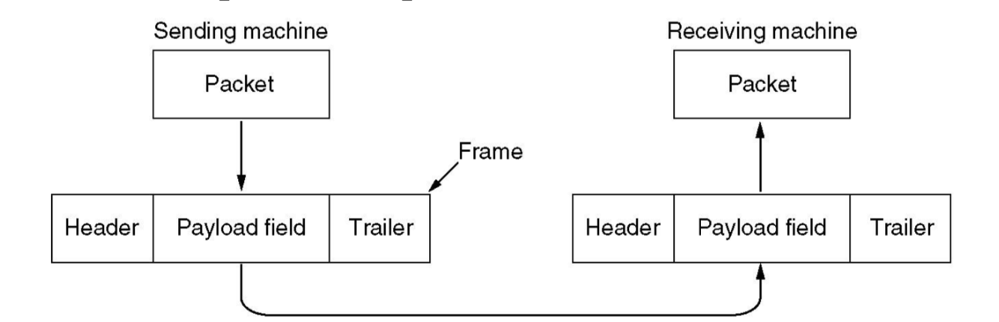
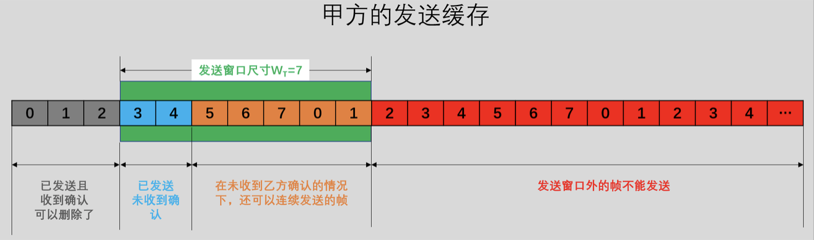

<!DOCTYPE html>
<html lang="en" >


<head>
  <meta charset="UTF-8">
  <link rel="apple-touch-icon" sizes="76x76" href="/img/favicon.png">
  <link rel="icon" type="image/png" href="/img/favicon.png">
  <meta name="viewport"
        content="width=device-width, initial-scale=1.0, maximum-scale=1.0, user-scalable=no, shrink-to-fit=no">
  <meta http-equiv="x-ua-compatible" content="ie=edge">
  
  <meta name="theme-color" content="black">
  <meta name="description" content="">
  <meta name="author" content="Chenlu Miao">
  <meta name="keywords" content="">
  <title>Computer network--数据链路层 - Explorer</title>

  <link  rel="stylesheet" href="https://cdn.staticfile.org/twitter-bootstrap/4.4.1/css/bootstrap.min.css" />


  <link  rel="stylesheet" href="https://cdn.staticfile.org/github-markdown-css/4.0.0/github-markdown.min.css" />
  <link  rel="stylesheet" href="/lib/hint/hint.min.css" />

  
    
    <link  rel="stylesheet" href="https://cdn.staticfile.org/highlight.js/10.0.0/styles/atom-one-dark.min.css" />
  

  
    <link  rel="stylesheet" href="https://cdn.staticfile.org/gitalk/1.6.2/gitalk.css" />
  


<!-- 主题依赖的图标库，不要自行修改 -->

<link rel="stylesheet" href="//at.alicdn.com/t/font_1749284_6peoq002giu.css">


<link rel="stylesheet" href="//at.alicdn.com/t/font_1736178_pjno9b9zyxs.css">


<link  rel="stylesheet" href="/css/main.css" />

<!-- 自定义样式保持在最底部 -->


  <script  src="/js/utils.js" ></script>
  <script  src="/js/color-schema.js" ></script>
<meta name="generator" content="Hexo 4.2.1"></head>


<body>
  <header style="height: 70vh;">
    <nav id="navbar" class="navbar fixed-top  navbar-expand-lg navbar-dark scrolling-navbar">
  <div class="container">
    <a class="navbar-brand"
       href="/">&nbsp;<strong>Explorer</strong>&nbsp;</a>

    <button id="navbar-toggler-btn" class="navbar-toggler" type="button" data-toggle="collapse"
            data-target="#navbarSupportedContent"
            aria-controls="navbarSupportedContent" aria-expanded="false" aria-label="Toggle navigation">
      <div class="animated-icon"><span></span><span></span><span></span></div>
    </button>

    <!-- Collapsible content -->
    <div class="collapse navbar-collapse" id="navbarSupportedContent">
      <ul class="navbar-nav ml-auto text-center">
        
          
          
          
          
            <li class="nav-item">
              <a class="nav-link" href="/">
                <i class="iconfont icon-home-fill"></i>
                Home
              </a>
            </li>
          
        
          
          
          
          
            <li class="nav-item">
              <a class="nav-link" href="/archives/">
                <i class="iconfont icon-archive-fill"></i>
                Archives
              </a>
            </li>
          
        
          
          
          
          
            <li class="nav-item">
              <a class="nav-link" href="/categories/">
                <i class="iconfont icon-category-fill"></i>
                Categories
              </a>
            </li>
          
        
          
          
          
          
            <li class="nav-item">
              <a class="nav-link" href="/tags/">
                <i class="iconfont icon-tags-fill"></i>
                Tags
              </a>
            </li>
          
        
          
          
          
          
            <li class="nav-item">
              <a class="nav-link" href="/about/">
                <i class="iconfont icon-user-fill"></i>
                About
              </a>
            </li>
          
        
        
          <li class="nav-item" id="search-btn">
            <a class="nav-link" data-toggle="modal" data-target="#modalSearch">&nbsp;<i
                class="iconfont icon-search"></i>&nbsp;</a>
          </li>
        
        
      </ul>
    </div>
  </div>
</nav>

    <div class="banner intro-2" id="background" parallax=true
         style="background: url('/img/default.png') no-repeat center center;
           background-size: cover;">
      <div class="full-bg-img">
        <div class="mask flex-center" style="background-color: rgba(0, 0, 0, 0.3)">
          <div class="container page-header text-center fade-in-up">
            <span class="h2" id="subtitle">
              
            </span>

            
              
  <div class="mt-3 post-meta">
    <i class="iconfont icon-date-fill" aria-hidden="true"></i>
    <time datetime="2019-10-16 07:31" pubdate>
      October 16, 2019 am
    </time>
  </div>


<div class="mt-1">
  
    
    <span class="post-meta mr-2">
      <i class="iconfont icon-chart"></i>
      3.9k 字
    </span>
  

  
    
    <span class="post-meta mr-2">
      <i class="iconfont icon-clock-fill"></i>
      
      
      50
       分钟
    </span>
  

  
  
    
      <!-- 不蒜子统计文章PV -->
      <span id="busuanzi_container_page_pv" style="display: none">
        <i class="iconfont icon-eye" aria-hidden="true"></i>
        <span id="busuanzi_value_page_pv"></span> 次
      </span>
    
  
</div>

            
          </div>

          
        </div>
      </div>
    </div>
  </header>

  <main>
    
      

<div class="container-fluid">
  <div class="row">
    <div class="d-none d-lg-block col-lg-2"></div>
    <div class="col-lg-8 nopadding-md">
      <div class="container nopadding-md" id="board-ctn">
        <div class="py-5" id="board">
          <article class="post-content mx-auto" id="post">
            <!-- SEO header -->
            <h1 style="display: none">Computer network--数据链路层</h1>
            
            <div class="markdown-body" id="post-body">
              <p>计算机网络课程—数据链路层总结</p>
<a id="more"></a>
<style>
  .page__header .header__brand path {
    fill: rgba(255, 255, 255, .95);
  }
</style>


<p><br/></p>
<h1 id="1-数据链路层的设计问题"><a href="#1-数据链路层的设计问题" class="headerlink" title="1. 数据链路层的设计问题"></a>1. 数据链路层的设计问题</h1><p>数据链路层使用物理层提供的服务在通信信道上发送和接收比特。要实现的功能包括</p>
<ul>
<li>向网络层提供一个定义良好的服务接口</li>
<li>处理传输错误</li>
<li>调节数据流，确保慢速的接受方不会被快速的发送方淹没</li>
</ul>
<p>数据包被封装成帧，每个帧包含一个Header,一个Payload field,一个Trailer</p>
<center></center>

<h2 id="1-1-提供给网络层的服务"><a href="#1-1-提供给网络层的服务" class="headerlink" title="1.1 提供给网络层的服务"></a>1.1 提供给网络层的服务</h2><p>三种服务类型</p>
<ul>
<li>无确认的无连接服务</li>
</ul>
<blockquote>
<p>特点</p>
<ul>
<li><p>事先不用建立物理连接，事后也不用释放逻辑连接</p>
</li>
<li><p>源机器向目标机器发送独立的frame,目标机器不对这些frame进行确认</p>
</li>
</ul>
<p>适合的场合</p>
<ul>
<li><p>实时通信[数据迟到比数据受损更难忍受]</p>
</li>
<li><p>错误率比较低的场合[因为数据链路层可靠性不高，所以物理层reliable要求会高一点，适合有线网络</p>
</li>
</ul>
</blockquote>
<ul>
<li>有确认的无连接服务</li>
</ul>
<blockquote>
<p>特点</p>
<ul>
<li>不用建立物理连接</li>
<li>发送的每一帧都要单独确认，这样发送方可以知道一个帧是否已经正确到达目的地。如果一个帧在制定时间间隔内还没有到达，则发送方将再次发送该帧</li>
<li>不能保证收到包的顺序和发送顺序一致</li>
</ul>
<p>适用场合</p>
<ul>
<li>不可靠的信道：无线系统,WiFi</li>
</ul>
</blockquote>
<ul>
<li>有确认的有连接服务</li>
</ul>
<blockquote>
<p>源机器和目标机器在传输任何数据之前要建立一个连接，连接发送每一帧都被编号，数据链路层确保发出的每个帧都会真正被接收方按顺序收到且只收到一次。相当于提供了一个可靠的比特流</p>
<p>适用场合</p>
<ul>
<li>长距离且不可靠的链路 </li>
</ul>
</blockquote>
<h2 id="1-2-framing-成帧"><a href="#1-2-framing-成帧" class="headerlink" title="1.2 framing[成帧]"></a>1.2 framing[成帧]</h2><p>数据链路层要检测和纠正错误。</p>
<p>数据链路层通常的做法是将比特流拆分成多个离散的帧。</p>
<p>为每个帧计算一个称为校验和的短令牌，放在帧中一起传输。</p>
<p>帧到达目标机器时，重新计算校验和。如果新计算的校验和与传输过来的不同，说明产生了错误。</p>
<p><br/></p>
<p>拆分方法</p>
<h3 id="1-2-1-Byte-count"><a href="#1-2-1-Byte-count" class="headerlink" title="1.2.1 Byte count"></a>1.2.1 Byte count</h3><p>Method: to use a field in the header to specify the number of characters in the frame.</p>
<center></center>

<p>problem:</p>
<p>错了一个character count就会全错</p>
<center></center>

<h3 id="1-2-2-flag-bytes-with-byte-stuffing字节填充的标志字节法"><a href="#1-2-2-flag-bytes-with-byte-stuffing字节填充的标志字节法" class="headerlink" title="1.2.2  flag bytes with byte stuffing字节填充的标志字节法"></a>1.2.2  flag bytes with byte stuffing字节填充的标志字节法</h3><p>考虑到出错之后到重新同步问题，用一些标志字节(flag byte)作为一个帧开始和结束</p>
<center></center>

<p>如图所示的这种frame的结构</p>
<p>两个连续的flag标志了一帧的结束和下一帧的开始。</p>
<p>problem:</p>
<p>如果标志字节在数据中出现，会干扰到帧的分界</p>
<p><br/></p>
<p>所以提出的解决方法是字节填充(byte stuffing)，发送方的数据链路层在数据中偶尔出现的每个标志字节前面插入一个特殊的转义字节(ESC),如果转移字符也出现在数据中，再用一个转义字符填充</p>
<center></center>

<h3 id="1-2-3-flag-bit-with-bit-stuffing"><a href="#1-2-3-flag-bit-with-bit-stuffing" class="headerlink" title="1.2.3 flag bit with bit stuffing"></a>1.2.3 flag bit with bit stuffing</h3><p>考虑到字节填充只能使用8bits的字节，这里bit填充可以使帧包含任意大小单元</p>
<p>flag bits 01111110</p>
<p>也要考虑数据中出现flag的问题，所以发送方的数据链路层在数据中每遇到连续的5个1，就添加1个0</p>
<p>接收方看到5个连续的1，后面紧跟1个0，就自动剔除这个0</p>
<center> </center>

<h3 id="1-2-4-physical-layer-encoding-violation"><a href="#1-2-4-physical-layer-encoding-violation" class="headerlink" title="1.2.4 physical layer encoding violation"></a>1.2.4 physical layer encoding violation</h3><p>物理层有讲过4B/5B的编码，4个比特被映射成5个比特，说明有16种信号不会出现在数据中，可以用来作为flag</p>
<h2 id="1-3-Error-control"><a href="#1-3-Error-control" class="headerlink" title="1.3 Error control"></a>1.3 Error control</h2><p>如何保证所有帧最终传递给目标机器的网络层，并且保持正确的顺序</p>
<p>– To provide the sender with some feedback</p>
<ul>
<li>Positive acknowledgement (ACK) 收到信号回一个ack</li>
<li>Negative acknowledgement (NAK) 没收到信号回一个nack， 潜在的假设是我知道发送的包以及发送的顺序</li>
</ul>
<p>– To provide timeout timers</p>
<ul>
<li>Resend as necessary</li>
</ul>
<p>– To number frames</p>
<ul>
<li>To distinguish retransmissions from originals</li>
</ul>
<h2 id="1-4-Flow-control"><a href="#1-4-Flow-control" class="headerlink" title="1.4 Flow control"></a>1.4 Flow control</h2><p>发送方发送帧的速度超过了接收方接收的速度，该如何处理</p>
<ul>
<li><p>To introduce flow control to throttle the sender into sending no faster than the receiver can handle the traffic.</p>
</li>
<li><p>Flow control protocol contains well-defined rules about when a sender may transmit the next frame.</p>
</li>
<li><p>Two approaches<br>– <strong>Feedback-based flow control</strong> 由receiver决定发送的速度</p>
<p>– Rate-based flow control</p>
</li>
</ul>
<h1 id="2-Error-Detection-and-Correction"><a href="#2-Error-Detection-and-Correction" class="headerlink" title="2. Error Detection and Correction"></a>2. Error Detection and Correction</h1><p>Error Types</p>
<blockquote>
<p>isolated errors单个的错误</p>
<p>burst errors一连串的错误</p>
</blockquote>
<p>approaches: 在数据中引入一些<u>冗余</u>来进行error detection和error correction</p>
<h2 id="2-1-一些概念"><a href="#2-1-一些概念" class="headerlink" title="2.1 一些概念"></a>2.1 一些概念</h2><h3 id="i"><a href="#i" class="headerlink" title="i."></a>i.</h3><p>一帧有</p>
<ul>
<li>m个数据位</li>
<li>r个冗余位。r个校验位是由m个数据位的函数计算得到的</li>
</ul>
<p>令数据块总长度为n(n=m+r)，我们称其为(n,m)码。</p>
<p><u>码字</u>(codeword): 一个包含了数据位和校验位的n位单元</p>
<p>码率(code rate): codeword中数据部分占比m/n</p>
<h3 id="ii"><a href="#ii" class="headerlink" title="ii."></a>ii.</h3><p>Hamming distance of 2 codewords</p>
<blockquote>
<p> 两个codeword中不相同的bit的个数</p>
</blockquote>
<p>Hamming distance of complete code(all valid codewords)</p>
<blockquote>
<p>The minimum Hamming distance of two valid codewords in the code</p>
</blockquote>
<center></center>

<p>To detect d errors, you need d+1 Hamming distance code.</p>
<blockquote>
<p>因为，d+1的hamming distance,说明两个codeword之间最少有d+1位不相同。所以如果d个错误出现，这个codeword也不会错成一个valid codeword.</p>
</blockquote>
<p>To correct d errors, you need 2d+1 Hamming distance code</p>
<blockquote>
<p>因为,两个codeword之间最少有2d+1个bits不相同，如果有d errors,那么偏离原codeword的hamming distance 为d, 2d+1的距离保证了与这个错误的codeword距离最近的依然是原codeword</p>
</blockquote>
<h2 id="2-2-Error-Correction-codes"><a href="#2-2-Error-Correction-codes" class="headerlink" title="2.2 Error Correction codes"></a>2.2 Error Correction codes</h2><h3 id="2-2-1-Hamming-code-for-single-error"><a href="#2-2-1-Hamming-code-for-single-error" class="headerlink" title="2.2.1 Hamming code for single error"></a>2.2.1 Hamming code for single error</h3><p>参考以下两篇blog可以有一个基本了解，我结合他们做了一个总结</p>
<p><a href="https://blog.csdn.net/Yonggie/article/details/83186280" target="_blank" rel="noopener">https://blog.csdn.net/Yonggie/article/details/83186280</a></p>
<p><a href="https://blog.csdn.net/blue_starry_sky/article/details/53997548" target="_blank" rel="noopener">https://blog.csdn.net/blue_starry_sky/article/details/53997548</a></p>
<p>(图片中应该是redundancy)</p>
<table>
  <tr>
    <td></td>
    <td>
    </td>
  </tr>
</table>


<p>为什么上述纠错可行呢？</p>
<p>因为如果没有出现错误的话$hi\oplus(P_i组内异或结果)=0$，因为我们计算的时候$h_i=P_i组内异或结果$, 自己和自己异或为0。如果出现了一个错误的话，与这个错误相关的组$hi\oplus(P_i组内异或结果)=1$, 这些组别标识了错误的位置</p>
<p><br/></p>
<p><br/></p>
<p>-你知道吗，Hamming codes也可以用来correct burst error呢？</p>
<p>-哦？怎么做呢</p>
<p>-嘿嘿嘿，有一点tricky</p>
<ul>
<li>one codeword per row. k consecutive codewords</li>
<li>–Transmit the matrix by one column at a time.</li>
</ul>
<p>这样一行的连串错误，在列看来就是一列可以有一个错误</p>
<center></center>

<h2 id="2-3-Error-Detection-codes"><a href="#2-3-Error-Detection-codes" class="headerlink" title="2.3 Error Detection codes"></a>2.3 Error Detection codes</h2><p>相比error correction, error detection代价更小。</p>
<p>error correction引入太多redundancy bit, 不如用error detection，如果检测到error,就retransmission这样代价小。</p>
<h3 id="2-3-1-Parity"><a href="#2-3-1-Parity" class="headerlink" title="2.3.1 Parity"></a>2.3.1 Parity</h3><blockquote>
<p>Append a parity bit to detect single error.</p>
</blockquote>
<p>奇校验：数据bit 1的个数为奇数就加一个0bit, 是偶数就加一个1bit。保持1的个数为奇数</p>
<p>偶校验：数据bit 1的个数为偶数就加一个0bit, 是奇数就加一个1bit。保持1点个数为偶数</p>
<p>single error显然是可以检测出来，其实burst error也是可以的，如下图，上文提到的按列发送</p>
<center></center>

<h3 id="2-3-2-Checksum"><a href="#2-3-2-Checksum" class="headerlink" title="2.3.2 Checksum"></a>2.3.2 Checksum</h3><blockquote>
<p>将数据分成若干段，做加法，取模</p>
</blockquote>
<p>一个internet checksum的例子</p>
<center>                  </center>

<p>性质</p>
<p>– Improved error detection over parity bits</p>
<p>– Vulnerable to systematic errors, 比如：在后面加了一连串0，检测不出错</p>
<h3 id="2-3-3-CRC"><a href="#2-3-3-CRC" class="headerlink" title="2.3.3 CRC"></a>2.3.3 CRC</h3><center></center>
<center></center>
<center></center>

<p>注意一个$x^{k-1}+\cdots+1$是一个$k-1$阶多项式</p>
<p>选择余数的位数为除数的阶。比如$x^4+x+1$是一个4阶多项式，选择余数为4阶。</p>
<p><br/></p>
<h1 id="3-基本数据链路层协议"><a href="#3-基本数据链路层协议" class="headerlink" title="3. 基本数据链路层协议"></a>3. 基本数据链路层协议</h1><center></center>

<h2 id="3-1-Elementary-Data-Link-Protocol"><a href="#3-1-Elementary-Data-Link-Protocol" class="headerlink" title="3.1 Elementary Data Link Protocol"></a>3.1 Elementary Data Link Protocol</h2><h3 id="3-1-2-Some-Assumptions"><a href="#3-1-2-Some-Assumptions" class="headerlink" title="3.1.2 Some Assumptions"></a>3.1.2 Some Assumptions</h3><ul>
<li>物理层、数据链路层、网络层都是独立的进程，通过来回传递消息进行通信。</li>
<li>机器A希望用一个可靠的、面向连接的服务向机器B发送一个长数据流</li>
<li>机器不会崩溃</li>
</ul>
<h3 id="3-1-3-声明"><a href="#3-1-3-声明" class="headerlink" title="3.1.3 声明"></a>3.1.3 声明</h3><p><code>seq_nr</code>对帧进行编号，0~MAX_SEQ</p>
<p>一个帧由4个字段组成:kind, seq, ack, info 前三个包含控制信息，最后一个可能包含要传输的实际数据，这些字段合起来称为 <strong>帧头</strong></p>
<blockquote>
<p>kind指出帧中是否有数据</p>
<p>seq序号</p>
<p>ack确认</p>
<p>info数据包</p>
</blockquote>
<p>信道传输，有时会丢失帧，发送方会启动计时器，在预设时间间隔没有收到应答，则时钟超时，链路层发出终端信号。实现</p>
<blockquote>
<p>让过程 <code>wait for event</code>返回 <code>event= timeout</code> </p>
<p>过程 <code>start_timer</code> 和 <code>stop_timer</code> 分别打开和关闭计时器。</p>
<p>只有当计时器在运行并且调用 <code>stop_timer</code> 之前，超时事件才有可能发生。在计时器运行的同时，允许显式地调用 start_timer: 这样的调用只是重置时钟，等到再经过一个完整的时钟间隔之后引发下一次超时事件（除 非它再次被重置，或者被关闭〉。</p>
</blockquote>
<p>过程 <code>start_ack_timer</code> 和 <code>stop_ack_timer</code> 控制一个辅助计时器，该定时器被用于在特定条件下产生确认。</p>
<div class="hljs"><pre><code class="hljs cpp"><span class="hljs-meta">#<span class="hljs-meta-keyword">define</span> MAX_PKT 1024</span>
<span class="hljs-keyword">typedef</span> <span class="hljs-keyword">enum</span> &#123;<span class="hljs-literal">false</span>, <span class="hljs-literal">true</span>&#125; boolean;
<span class="hljs-keyword">typedef</span> <span class="hljs-keyword">unsigned</span> <span class="hljs-keyword">int</span> seq_nr;
<span class="hljs-keyword">typedef</span> <span class="hljs-class"><span class="hljs-keyword">struct</span> &#123;</span><span class="hljs-keyword">unsigned</span> <span class="hljs-keyword">char</span> data[MAX_PKT];&#125; packet;
<span class="hljs-keyword">typedef</span> <span class="hljs-keyword">enum</span> &#123;data, ack, nak&#125; frame_kind;

<span class="hljs-keyword">typedef</span> <span class="hljs-class"><span class="hljs-keyword">struct</span> &#123;</span>
  frame_kind kind;
  seq_nr seq;
  seq_nr ack;
  packet info;
&#125; frame;

<span class="hljs-function"><span class="hljs-keyword">void</span> <span class="hljs-title">wait_for_event</span><span class="hljs-params">(event_type* event)</span></span>;
<span class="hljs-function"><span class="hljs-keyword">void</span> <span class="hljs-title">from_network_layer</span><span class="hljs-params">(packet* p)</span></span>;
<span class="hljs-function"><span class="hljs-keyword">void</span> <span class="hljs-title">to_network_layer</span><span class="hljs-params">(packet* p)</span></span>;
<span class="hljs-function"><span class="hljs-keyword">void</span> <span class="hljs-title">from_physical_layer</span><span class="hljs-params">(frame* r)</span></span>;
<span class="hljs-function"><span class="hljs-keyword">void</span> <span class="hljs-title">start_timer</span><span class="hljs-params">(seq_nr k)</span></span>;
<span class="hljs-function"><span class="hljs-keyword">void</span> <span class="hljs-title">stop_timer</span><span class="hljs-params">(seq_nr k)</span></span>;
<span class="hljs-function"><span class="hljs-keyword">void</span> <span class="hljs-title">start_ack_timer</span><span class="hljs-params">(<span class="hljs-keyword">void</span>)</span></span>;
<span class="hljs-function"><span class="hljs-keyword">void</span> <span class="hljs-title">stop_ack_timer</span><span class="hljs-params">(<span class="hljs-keyword">void</span>)</span></span>;
<span class="hljs-function"><span class="hljs-keyword">void</span> <span class="hljs-title">enable_network_layer</span><span class="hljs-params">(<span class="hljs-keyword">void</span>)</span></span>;
<span class="hljs-function"><span class="hljs-keyword">void</span> <span class="hljs-title">disable_network_layer</span><span class="hljs-params">(<span class="hljs-keyword">void</span>)</span></span>;
<span class="hljs-comment">//increment k circularly</span>
<span class="hljs-meta">#<span class="hljs-meta-keyword">define</span> inc(k) <span class="hljs-meta-keyword">if</span>(k &lt; MAX_SEQ) k = k + 1; <span class="hljs-meta-keyword">else</span> k = 0</span></code></pre></div>
<h3 id="3-1-4-一个乌托邦式的单工协议"><a href="#3-1-4-一个乌托邦式的单工协议" class="headerlink" title="3.1.4 一个乌托邦式的单工协议"></a>3.1.4 一个乌托邦式的单工协议</h3><ul>
<li><p>Data are transmitted in <u>one direction only</u>.</p>
</li>
<li><p>The communication channel <u>never damages or loses frames</u>.</p>
</li>
<li><p>Both the transmitting and receiving network layers are <u>always ready</u>.</p>
</li>
<li><p>Processing time can be ignored.</p>
</li>
<li><p>Infinite buffer space is available.</p>
</li>
</ul>
<div class="hljs"><pre><code class="hljs cpp"><span class="hljs-keyword">typedef</span> <span class="hljs-keyword">enum</span> &#123;frame_arrival&#125; event_type;
<span class="hljs-meta">#<span class="hljs-meta-keyword">include</span> <span class="hljs-meta-string">"protocol.h"</span></span>

<span class="hljs-function"><span class="hljs-keyword">void</span> <span class="hljs-title">sender1</span><span class="hljs-params">(<span class="hljs-keyword">void</span>)</span> </span>&#123;
  <span class="hljs-comment">//buffer for an outbound frame</span>
  frame s;
  <span class="hljs-comment">//buffer for an outbound packet</span>
  packet buffer;
  <span class="hljs-keyword">while</span>(<span class="hljs-literal">true</span>) &#123;
    <span class="hljs-comment">//从网络层拿一个包</span>
    from_network_layer(&amp;buffer);
    <span class="hljs-comment">//放到frame</span>
    s.info = buffer;
    <span class="hljs-comment">//传包</span>
    to_physical_layer(&amp;s);
  &#125;
&#125;</code></pre></div>
<div class="hljs"><pre><code class="hljs cpp"><span class="hljs-function"><span class="hljs-keyword">void</span> <span class="hljs-title">receiver1</span><span class="hljs-params">(<span class="hljs-keyword">void</span>)</span> </span>&#123;
  frame r;
  <span class="hljs-comment">//filled in by wait, but not used here</span>
  event_type event;
  
  <span class="hljs-keyword">while</span>(<span class="hljs-literal">true</span>) &#123;
    <span class="hljs-comment">//only possibility is frame_arrival</span>
    wait_for_event(&amp;event);
    <span class="hljs-comment">//go get the inbound frame</span>
    from_physical_layer(&amp;r);
    <span class="hljs-comment">//pass the data to the network layer</span>
    to_network_layer(&amp;r.info);
  &#125;
&#125;</code></pre></div>
<h3 id="3-1-5-A-simplex-stop-and-wait-protocol"><a href="#3-1-5-A-simplex-stop-and-wait-protocol" class="headerlink" title="3.1.5 A simplex stop-and-wait protocol"></a>3.1.5 A simplex stop-and-wait protocol</h3><ul>
<li><p>Data traffic is still <u>simplex protocol</u></p>
</li>
<li><p>The communication channel is assumed to be <u>error free</u>. </p>
</li>
<li><p>The sender is always ready. <strong><em><u>The receiver is NOT always ready or the receiver has limited buffer space</u></em></strong>.这里放宽了protocol的限制</p>
<ul>
<li>The sender simply inserts a delay into protocol 1 to slow it down sufficiently to keep from swamping the receiver. —&gt; low utilization of bandwidth.</li>
<li>The receiver provides <u>feedback</u> to the sender, permitting the sender to transmit the next frame.</li>
</ul>
</li>
<li><p>Protocol(p2) ensures sender can’t outspace receiver:</p>
<ul>
<li>Receiver returns a dummy frame (ack) when ready</li>
<li>Only one frame out at a time ± called stop-and-wait</li>
<li>We added flow control!</li>
</ul>
</li>
</ul>
<center></center>

<div class="hljs"><pre><code class="hljs cpp"><span class="hljs-keyword">typedef</span> <span class="hljs-keyword">enum</span> &#123;frame_arrival&#125; event_type;
<span class="hljs-meta">#<span class="hljs-meta-keyword">include</span> <span class="hljs-meta-string">"protocol.h"</span></span>

<span class="hljs-function"><span class="hljs-keyword">void</span> <span class="hljs-title">sender2</span><span class="hljs-params">(<span class="hljs-keyword">void</span>)</span> </span>&#123;
  frame s;
  packet buffer;
  event_type event;
  
  <span class="hljs-keyword">while</span>(<span class="hljs-literal">true</span>) &#123;
    from_network_layer(&amp;buffer);
    s.info = buffer;
    to_physical_layer(&amp;s);
    wait_for_event(&amp;event);
  &#125;
&#125;</code></pre></div>
<div class="hljs"><pre><code class="hljs cpp"><span class="hljs-function"><span class="hljs-keyword">void</span> <span class="hljs-title">receiver2</span><span class="hljs-params">(<span class="hljs-keyword">void</span>)</span> </span>&#123;
  frame r, s;
  event_type event;
  <span class="hljs-keyword">while</span>(<span class="hljs-literal">true</span>) &#123;
    wait_for_event(&amp;event);
    from_physical_layer(&amp;r);
    to_network_layer(&amp;r.info);
    to_physical_layer(&amp;s);
  &#125;
&#125;</code></pre></div>
<h3 id="3-1-6-A-simplex-protocol-for-a-noisy-channel"><a href="#3-1-6-A-simplex-protocol-for-a-noisy-channel" class="headerlink" title="3.1.6 A simplex protocol for a noisy channel"></a>3.1.6 A simplex protocol for a noisy channel</h3><ul>
<li>Data traffic is <u>still simplex</u></li>
<li>The communication channel is <strong><em><u>NOT free of errors</u></em></strong>.</li>
<li>The receiver is <strong><em><u>Not always ready</u></em></strong>.</li>
</ul>
<p>possible solutions:</p>
<ul>
<li><p>Protocol2 + timer —-&gt; duplicate packets</p>
</li>
<li><p>Protocol2 + timer + to number the frame</p>
</li>
</ul>
<p>如果在一个协议中，发送方在前移到下一个数据之前必须等待一个肯定确认，这样的协议称为自动重复请求(ARQ, Automatic Repeat Request)或者带有重传的肯定确认(PAR, Positive Acknowledgement with Retransmission)</p>
<table>
  <tr>
    <td>
      
    </td>
    <td>
      
    </td> 
    <td>
      
    </td>
  </tr>
</table>


<div class="hljs"><pre><code class="hljs cpp"><span class="hljs-meta">#<span class="hljs-meta-keyword">define</span> MAZ_SEQ1</span>
<span class="hljs-keyword">typedef</span> <span class="hljs-keyword">enum</span> &#123;frame_arrival, cksum_err, timeout&#125; event_type;
<span class="hljs-meta">#<span class="hljs-meta-keyword">include</span> <span class="hljs-meta-string">"protocol.h"</span></span>
<span class="hljs-function"><span class="hljs-keyword">void</span> <span class="hljs-title">sender3</span><span class="hljs-params">(<span class="hljs-keyword">void</span>)</span> </span>&#123;
  <span class="hljs-comment">//seq number of next outgoing frame</span>
  seq_nr next_frame_to_send;
  <span class="hljs-comment">//scratch variable</span>
  frame s;
  <span class="hljs-comment">//buffer for an outbound packet</span>
  packet buffer;
  event_type event;
  <span class="hljs-comment">//initialize outbound sequence numbers</span>
  next_frame_to_send = <span class="hljs-number">0</span>;
  <span class="hljs-comment">//fetch first packet</span>
  from_network_layer(&amp;buffer);
  
  <span class="hljs-keyword">while</span>(<span class="hljs-literal">true</span>) &#123;
    <span class="hljs-comment">//construct a frame for transmission</span>
    s.info = buffer;
    <span class="hljs-comment">//insert sequence number in frame</span>
    s.seq = next_frame_to_send;
    <span class="hljs-comment">//send it on its way</span>
    to_physical_layer(&amp;s);
    <span class="hljs-comment">//if answer takes too long, timeout</span>
    start_timer(s.seq);
    <span class="hljs-comment">//frame_arrival, cksum_err, timeout</span>
    wait_for_event(&amp;event);
    <span class="hljs-keyword">if</span>(event == frame_arrival)&#123;
      	<span class="hljs-comment">//get the acknowledgement</span>
        from_physical_layer(&amp;s);
        <span class="hljs-keyword">if</span>(s.ack == next_frame_to_send) &#123;
          <span class="hljs-comment">//turn the timer off</span>
          stop_timer(s.ack);
          <span class="hljs-comment">//get the next one to send</span>
          from_network_layer(&amp;buffer);
          <span class="hljs-comment">//invert next_frame_to_send</span>
          inc(next_frame_to_send);
      	&#125;
    &#125;
  &#125;
&#125;</code></pre></div>
<div class="hljs"><pre><code class="hljs cpp"><span class="hljs-function"><span class="hljs-keyword">void</span> <span class="hljs-title">receiver3</span><span class="hljs-params">(<span class="hljs-keyword">void</span>)</span> </span>&#123;
  frame r, s;
  event_type event;
  frame_expected = <span class="hljs-number">0</span>;
  <span class="hljs-keyword">while</span>(<span class="hljs-literal">true</span>) &#123;
    wait_for_event(&amp;event);<span class="hljs-comment">//frame_arrival, cksum_err</span>
    <span class="hljs-keyword">if</span>(event == frame_arrival) &#123;
      from_physical_layer(&amp;r);
      <span class="hljs-keyword">if</span>(r.seq == frame_expected) &#123;
        to_network_layer(&amp;r.info);
        inc(frame_expected);
      &#125;
    &#125;
  &#125;
  s.ack = <span class="hljs-number">1</span> - frame_expected;
&#125;</code></pre></div>
<table>
  <tr>
    <td>
      
    </td>
        <td>
  
      </td> 
  </tr>
</table>


<p>​     </p>
<h3 id="3-1-7-Sliding-window-protocol"><a href="#3-1-7-Sliding-window-protocol" class="headerlink" title="3.1.7 Sliding window protocol"></a>3.1.7 Sliding window protocol</h3><p>前面的协议中，数据帧单向传输，但是大多数情况，需要双向传输。</p>
<p>实现全双工的一种方法是运行前面协议的两个实例，每个实例使用一条独立的链路进行单工数据传输。但是这样每条链路由一个“前向”信道(用于数据)和一个”逆向”信道(用于确认)组成。两种情况下的逆向带宽几乎被完全浪费了。</p>
<p>一种更好的做法是使用同一条链路来传输两个方向上的数据。</p>
<p>机器A向机器B发送数据帧和确认帧[确认收到机器B上一次发送的帧]混合，接收方只需检查帧头部kind字段，就可以分辨数据帧和确认帧</p>
<p><br/></p>
<p><strong>i. 捎带确认[piggybacking]</strong>：</p>
<blockquote>
<p>暂时延缓确认以便将确认信息搭载在下一个出境数据帧上的技术。确认信息被附加在往外发送的数据帧上[使用帧头的ack字段]</p>
<p>优化了上述发送数据帧和确认帧的方法，减轻了接收方的处理负担</p>
</blockquote>
<p><strong>ii. 滑动窗口[sliding window]</strong>:</p>
<blockquote>
<p>所有滑动窗口协议的本质是在任何时刻发送方总是维持一组序号，对应于允许它发送的帧。称这些帧落在<u>发送窗口</u>[sliding window]内。</p>
<p>接收方也维持一个<u>接受窗口</u>[receiving window]，对应于一组允许它接受的帧。</p>
<p>发送方的窗口和接收方的窗口不必有同样的上下界，甚至也不必有同样的大小</p>
<p>任何一个出境帧都包含一个序号， 范围从 0 到某个最大值。序号的最大值通常是$2^n-1$，这样序号正好可以填入到一个n位的字段中。停-等式滑动窗口协议使用n=1，限制了序号只能是 0 和 1 ，但是更加复杂的协议版本可以使用任意的n</p>
</blockquote>
<p><a href="https://blog.csdn.net/wdscq1234/article/details/52444277" target="_blank" rel="noopener">https://blog.csdn.net/wdscq1234/article/details/52444277</a></p>
<p>数据链路层协议将数据包递交给网络层的次序必须  和  发送机器上数据包从网络层传递给数据链路层的次序相同。</p>
<center></center>

<p><strong><u>A. 一位滑动窗口协议</u></strong></p>
<p>窗口尺寸为1，发送方发出一帧以后，必须等待前一帧的确认的到来才能发送下一帧，这个协议使用了停-等式办法</p>
<table>
  <tr>
    <td>
      
    </td>
    <td>
      
     </td>
    </tr>
</table>


<center></center>

<p><strong><u>B. Go back N</u></strong></p>
<p><a href="http://www.ccs-labs.org/teaching/rn/animations/gbn_sr/" target="_blank" rel="noopener">go back N动画</a></p>
<p><a href="https://media.pearsoncmg.com/aw/ecs_kurose_compnetwork_7/cw/content/interactiveanimations/go-back-n-protocol/index.html" target="_blank" rel="noopener">GBN animination</a></p>
<p><a href="https://blog.csdn.net/qq_34501940/article/details/51180268" target="_blank" rel="noopener">https://blog.csdn.net/qq_34501940/article/details/51180268</a></p>
<center></center>


<blockquote>
<p>在发送完一个帧后，不用停下来等待确认，而是可以连续发送多个数据帧。收到确认帧时，任可发送数据，这样就减少了等待时间，整个通信的通吞吐量提高。<br>如果前一个帧在超时时间内未得到确认，就认为丢失或被破坏，需要重发出错帧及其后面的所有数据帧。这样有可能有把正确的数据帧重传一遍，降低了传送效率。<br>线路很差时，使用退后N帧的协议会浪费大量的带宽重传帧。</p>
</blockquote>
<p><br/></p>
<p><br/></p>
<p><strong><u>C. Selective Repeat ARQ</u></strong></p>
<p><a href="https://media.pearsoncmg.com/aw/ecs_kurose_compnetwork_7/cw/content/interactiveanimations/selective-repeat-protocol/index.html" target="_blank" rel="noopener">ARQ</a></p>
<p>如果错误很少发生，则回退 n 协议可以工作得很好：但是，如果线路质量很差，那么重传的帧要浪费大量带宽。另一种处理错误的策略是选择重传协议，允许接收方<strong><em>接受并缓存坏帧</em></strong>或者丢失帧后面的所有帧。</p>
<center><</center>


<blockquote>
<p>NAK：非确认帧，当在一定时间内没有收到某个数据帧的ACK时，回复一个NACK。<br>在发送过程中，如果一个数据帧计时器超时，就认为该帧丢失或者被破坏，接收端只把出错的的帧丢弃，其后面的数据帧保存在缓存中，并向发送端回复NAK。发送端接收到NAK时，只发送出错的帧。<br>如果落在窗口的帧从未接受过，那么存储起来，等比它序列号小的所有帧都按次序交给网络层，那么此帧才提交给网络层。<br>接收端收到的数据包的顺序可能和发送的数据包顺序不一样。因此在数据包里必须含有顺序字符来帮助接受端来排序。<br>选择重传协议可以避免重复传送那些正确到达接收端的数据帧。但是接收端要设置具有相当容量的缓存空间，这在许多情况下是不够经济的。</p>
</blockquote>
<p><strong><em>Window size</em></strong></p>
<ul>
<li><p>Send Window $Size &lt;= (MAX_SEQ+1)/2$ 注意Max_seq是指最大序号，不是最大数量</p>
</li>
<li><p>Receive Window Size = Send Window Size</p>
</li>
</ul>
<blockquote>
<p>这个问题的本质在于当接收方向前移动它的窗口后，新的有效序号范围与老的序号范围有重叠。因此，后续的一批帧可能是重复的帧（如果所有的确认都丢失了），也可能是新的帧（如果所有的确认都接收到了)。接收方根本无法区分这两种情形。</p>
</blockquote>
<center></center>


<p></p>
<ol>
<li>从t0-&gt;t1, Node-B返回的最后一个包是R3,3</li>
</ol>
<p>说明Node-B收到了0～2号包，所有下一个期待A发送3号包</p>
<p>因此，收到的有S0,0 &amp; S1,0 &amp; S2,0</p>
<ol>
<li>注意，题目中说，transmission sequence number and acknowledgment sequence number是3bit</li>
</ol>
<p>所有一共有8个序号</p>
<p>在GBN协议中，序号个数≥发送窗口+1</p>
<p>所以，发送窗口为7</p>
<p></p>
<p>A还可以发送5个数据包</p>
<p>当发送第一个序号为5的数据帧时，可以同时对乙方发来的且按序到达的1号数据帧进行捎带确认，确认序号为2，因此甲方发送的第一个数据帧为S5,2；</p>
<p>同理，当发送最后一个序号为1的数据帧时，可以同时对乙方发来的且按序到达的1号数据帧进行捎带确认，确认序号为2，因此甲方发送的最后一个数据帧时S1,2。需要注意的是，尽管甲方收到了R3,3，也就是乙方发来的序号为3的数据帧，但是该数据帧并未按序到达，因为甲方之前没有收到序号为2的数据帧，因此甲方不能对R3,3进行捎带确认。</p>
<ol>
<li><p>方在t0时刻到t1时刻期间共发送了序号为0~4的5个数据帧。在t1时刻甲方超时重传2号数据帧，这表明甲方没有收到乙方对2号数据帧的确认，这可能是由于2号数据帧未按序到达乙方或按序到达乙方但出现了误码。由于甲乙双方都使用GBN协议，因此甲方需要重传超时的数据帧及其后续数据帧，也就是甲方需要重传序号为2~4的3个数据帧。重传的第一个帧的序号为2，由于之前已经按序正确收到乙方发来的序号为2的数据帧，因此可以进行捎带确认，确认号为3，因此重传的第一个帧为S2,3。</p>
</li>
<li></li>
</ol>
<script type="math/tex; mode=display">\frac{7\times 1000\times 8/100Mbps}{0.96ms+ 1000\times 8/100Mbps}=50\%</script><h1 id="4-数据链路层协议实例"><a href="#4-数据链路层协议实例" class="headerlink" title="4. 数据链路层协议实例"></a>4. 数据链路层协议实例</h1><h2 id="4-1-PPP"><a href="#4-1-PPP" class="headerlink" title="4.1 PPP"></a>4.1 PPP</h2><p>A standard protocol called PPP (Point to Point Protocol) is used to send packets over the links, including the SONET fiber optic links and ADSL links</p>
<center></center>

<p>PPP 功能包括处理错误检测链路的配置、支持多种协议、允许身份认证等。它是一个 早期简化协议的改进，那个协议称为串行线路 Internet 协议 （SLIP, Serial Line Internet Protocol ）。伴随着一组广泛选项， PPP 提供了 3 个主要特性：</p>
<ul>
<li><p>一种成帧方法。它可以毫无歧义地区分出一帧的结束和下一帧的开始．</p>
</li>
<li><p>一个链路控制协议．它可用于启动线路、测试线路、协商参数， 以及当线路不再需要时温和地关闭线路。该协议称为<strong><em><u>链路控制协议 （LCP, Link Control Protocol）</u></em></strong>。</p>
</li>
<li><p>一种协商网络层选项的方式。协商方式独立于网络层协议．所选择的方法是针对每一种支持的网络层都有一个不同的<strong><em><u>网络控制协议 （NCP, Network Control Protocol)</u></em></strong>。</p>
</li>
</ul>
<p>因为没有必要重新发明轮子，所以 PPP 帧格式的选择酷似 HDLC 帧格式。 HDLC 是<strong><em><u>高级数据链路控制协议 （ High-level Data Link Control ）</u></em></strong>，是一个早期被广泛使用的家庭协议实例。</p>
<p>PPP 和 HDLC 之间的主要区别在于：</p>
<ul>
<li><p>PPP 是面向字节而不是面向比特的．特别是 PPP 使用字节填充技术，所有帧的长度均是字节的整数倍。 HDLC 协议则使用比特填充技术， 允许帧的长度不是字节的倍数，例如 30.25 字节。</p>
</li>
<li><p>HDLC 协议提供了可靠的数据传输，所采用的方式正是我们已熟悉的滑动窗口、确认和超时机制等。 PPP 也可以在诸如无线网络等嘈杂的环境里提供可靠传输，具体细节由盯Cl663 定义。然而，实际上很少这样做．相反， Internet几乎都是采用一种“无编号模式”来提供无连接无确认的服务．</p>
</li>
</ul>
<center></center>

<h2 id="4-2-ADSL"><a href="#4-2-ADSL" class="headerlink" title="4.2 ADSL"></a>4.2 ADSL</h2><center></center>

<center></center>


            </div>
            <hr>
            <div>
              <div class="post-metas mb-3">
                
                  <div class="post-meta mr-3">
                    <i class="iconfont icon-category"></i>
                    
                      <a class="hover-with-bg" href="/categories/Computer-Network/">Computer Network</a>
                    
                  </div>
                
                
                  <div class="post-meta">
                    <i class="iconfont icon-tags"></i>
                    
                      <a class="hover-with-bg" href="/tags/Computer-Network/">Computer Network</a>
                    
                  </div>
                
              </div>
              
                <p class="note note-warning">本博客所有文章除特别声明外，均采用 <a href="https://creativecommons.org/licenses/by-sa/4.0/deed.zh" target="_blank" rel="nofollow noopener noopener">CC BY-SA 4.0 协议</a> ，转载请注明出处！</p>
              
              
                <div class="post-prevnext row">
                  <article class="post-prev col-6">
                    
                    
                      <a href="/2019/11/12/ComputerNetwork/MACLayer/">
                        <i class="iconfont icon-arrowleft"></i>
                        <span class="hidden-mobile">Computer network--MAC子层</span>
                        <span class="visible-mobile">Previous</span>
                      </a>
                    
                  </article>
                  <article class="post-next col-6">
                    
                    
                      <a href="/2019/10/13/ComputerArchitecture/pipeline/">
                        <span class="hidden-mobile">CA - Pipeline</span>
                        <span class="visible-mobile">Next</span>
                        <i class="iconfont icon-arrowright"></i>
                      </a>
                    
                  </article>
                </div>
              
            </div>

            
          </article>
        </div>
      </div>
    </div>
    
      <div class="d-none d-lg-block col-lg-2 toc-container" id="toc-ctn">
        <div id="toc">
  <p class="toc-header"><i class="iconfont icon-list"></i>&nbsp;TOC</p>
  <div id="tocbot"></div>
</div>

      </div>
    
  </div>
</div>

<!-- Custom -->


    
  </main>

  
    <a id="scroll-top-button" href="#" role="button">
      <i class="iconfont icon-arrowup" aria-hidden="true"></i>
    </a>
  

  
    <div class="modal fade" id="modalSearch" tabindex="-1" role="dialog" aria-labelledby="ModalLabel"
     aria-hidden="true">
  <div class="modal-dialog modal-dialog-scrollable modal-lg" role="document">
    <div class="modal-content">
      <div class="modal-header text-center">
        <h4 class="modal-title w-100 font-weight-bold">Search</h4>
        <button type="button" id="local-search-close" class="close" data-dismiss="modal" aria-label="Close">
          <span aria-hidden="true">&times;</span>
        </button>
      </div>
      <div class="modal-body mx-3">
        <div class="md-form mb-5">
          <input type="text" id="local-search-input" class="form-control validate">
          <label data-error="x" data-success="v"
                 for="local-search-input">keyword</label>
        </div>
        <div class="list-group" id="local-search-result"></div>
      </div>
    </div>
  </div>
</div>
  

  

  

  <footer class="mt-5">
  <div class="text-center py-3">
    <div>
      <a href="https://hexo.io" target="_blank" rel="nofollow noopener"><span>Hexo</span></a>
      <i class="iconfont icon-love"></i>
      <a href="https://github.com/fluid-dev/hexo-theme-fluid" target="_blank" rel="nofollow noopener">
        <span>Fluid</span></a>
    </div>
    

    

    
  </div>
</footer>

<!-- SCRIPTS -->
<script  src="https://cdn.staticfile.org/jquery/3.4.1/jquery.min.js" ></script>
<script  src="https://cdn.staticfile.org/twitter-bootstrap/4.4.1/js/bootstrap.min.js" ></script>
<script  src="/js/debouncer.js" ></script>
<script  src="/js/main.js" ></script>

<!-- Plugins -->


  
    <script  src="/js/lazyload.js" ></script>
  


  <script defer src="https://cdn.staticfile.org/clipboard.js/2.0.6/clipboard.min.js" ></script>
  <script  src="/js/clipboard-use.js" ></script>


  <script defer src="https://busuanzi.ibruce.info/busuanzi/2.3/busuanzi.pure.mini.js" ></script>


  <script  src="https://cdn.staticfile.org/tocbot/4.11.1/tocbot.min.js" ></script>
  <script>
    $(document).ready(function () {
      var boardCtn = $('#board-ctn');
      var boardTop = boardCtn.offset().top;

      tocbot.init({
        tocSelector: '#tocbot',
        contentSelector: '#post-body',
        headingSelector: 'h1,h2,h3,h4,h5,h6',
        linkClass: 'tocbot-link',
        activeLinkClass: 'tocbot-active-link',
        listClass: 'tocbot-list',
        isCollapsedClass: 'tocbot-is-collapsed',
        collapsibleClass: 'tocbot-is-collapsible',
        collapseDepth: 0,
        scrollSmooth: true,
        headingsOffset: -boardTop
      });
      if ($('.toc-list-item').length > 0) {
        $('#toc').css('visibility', 'visible');
      }
    });
  </script>


  <script  src="https://cdn.staticfile.org/typed.js/2.0.11/typed.min.js" ></script>
  <script>
    var typed = new Typed('#subtitle', {
      strings: [
        '  ',
        "Computer network--数据链路层&nbsp;",
      ],
      cursorChar: "_",
      typeSpeed: 70,
      loop: false,
    });
    typed.stop();
    $(document).ready(function () {
      $(".typed-cursor").addClass("h2");
      typed.start();
    });
  </script>


  <script  src="https://cdn.staticfile.org/anchor-js/4.2.2/anchor.min.js" ></script>
  <script>
    anchors.options = {
      placement: "right",
      visible: "hover",
      
    };
    var el = "h1,h2,h3,h4,h5,h6".split(",");
    var res = [];
    for (item of el) {
      res.push(".markdown-body > " + item)
    }
    anchors.add(res.join(", "))
  </script>


  <script  src="/js/local-search.js" ></script>
  <script>
    var path = "/local-search.xml";
    var inputArea = document.querySelector("#local-search-input");
    inputArea.onclick = function () {
      searchFunc(path, 'local-search-input', 'local-search-result');
      this.onclick = null
    }
  </script>


  <script  src="https://cdn.staticfile.org/fancybox/3.5.7/jquery.fancybox.min.js" ></script>
  <link  rel="stylesheet" href="https://cdn.staticfile.org/fancybox/3.5.7/jquery.fancybox.min.css" />

  <script>
    $('#post img:not(.no-zoom img, img[no-zoom]), img[zoom]').each(
      function () {
        var element = document.createElement('a');
        $(element).attr('data-fancybox', 'images');
        $(element).attr('href', $(this).attr('src'));
        $(this).wrap(element);
      }
    );
  </script>


  

  
    <!-- MathJax -->
    <script>
      MathJax = {
        tex: {
          inlineMath: [['$', '$'], ['\\(', '\\)']]
        },
        options: {
          renderActions: {
            findScript: [10, doc => {
              document.querySelectorAll('script[type^="math/tex"]').forEach(node => {
                const display = !!node.type.match(/; *mode=display/);
                const math = new doc.options.MathItem(node.textContent, doc.inputJax[0], display);
                const text = document.createTextNode('');
                node.parentNode.replaceChild(text, node);
                math.start = { node: text, delim: '', n: 0 };
                math.end = { node: text, delim: '', n: 0 };
                doc.math.push(math);
              });
            }, '', false],
            insertedScript: [200, () => {
              document.querySelectorAll('mjx-container').forEach(node => {
                let target = node.parentNode;
                if (target.nodeName.toLowerCase() === 'li') {
                  target.parentNode.classList.add('has-jax');
                }
              });
            }, '', false]
          }
        }
      };
    </script>

    <script async src="https://cdn.staticfile.org/mathjax/3.0.5/es5/tex-svg.js" ></script>

  


  <script  src="https://cdn.staticfile.org/mermaid/8.5.0/mermaid.min.js" ></script>
  <script>
    if (window.mermaid) {
      mermaid.initialize({"theme":"default"});
    }
  </script>


  

  

  

  

  

  

  


</body>
</html>
